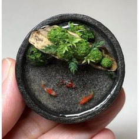
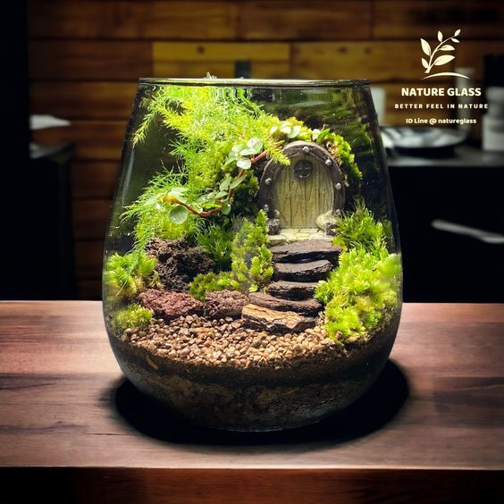

Un terrario es un recipiente en el que se reproducen las condiciones ambientales necesarias para distintos seres de vida total o parcialmente terrestres. Los terrarios no tienen un tamaño determinado. Aunque son comúnmente de cristal o vidrio pueden a su vez estar hechos de diversos materiales como plástico reciclado, macetas, etc.,
El único requisito para que un terrario sea considerado como tal es que al menos una de sus caras sea transparente para facilitar la visión del interior.
En el ámbito botánico, la palabra terrario suele referirse a pequeños invernaderos, donde se recrean las condiciones de un ambiente tropical, caracterizado por una alta humedad y temperatura constantes. Posibilitando el cultivo de especies de dicho entorno o similares. En un terrario con insectos los insectos se comen a las plantas. Se trata de ver que sucede
